A prolapse after calving is one of the most frightening sights on a farm — and one of the true veterinary emergencies. The uterus, turned inside out and hanging outside the body, is exposed to dirt, damage and infection, and the cow's life can be at risk within hours.
This guide explains the difference between vaginal and uterine prolapse, what to do in the first minutes, the step-by-step repair, retention methods (Buhner suture and truss), aftercare and prevention.
Vaginal vs Uterine Prolapse — Know the Difference
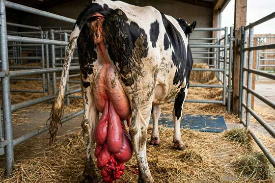
Uterine prolapse — a true emergency after calving
Both conditions involve tissue protruding from the vulva, but they are very different problems. Vaginal prolapse usually appears in late pregnancy and is often manageable; uterine prolapse happens within hours of calving and is a life-threatening emergency.
1
Vaginal prolapse(Pink vaginal tissue bulges from the vulva, usually in the last weeks of pregnancy; the cow is often otherwise well)
2
Uterine prolapse(The whole uterus turns inside out and hangs outside the body after calving — large, red and heavy)
3
Timing is the clue(Before calving, think vaginal prolapse; within hours after calving, think uterine prolapse)
4
Urgency differs(Vaginal prolapse needs prompt veterinary care; uterine prolapse needs the veterinarian at once)
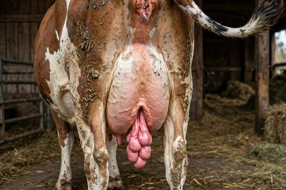
Vaginal prolapse — usually late pregnancy
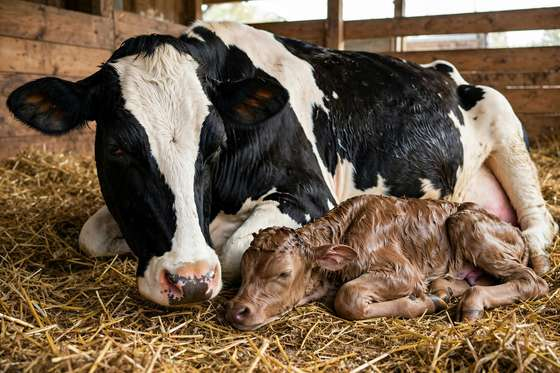
Uterine prolapse follows calving
Pathogenesis
Vaginal prolapse and uterine prolapse share one driving force — straining against a relaxed, unsupported pelvic floor — but they develop in different ways. In late pregnancy, rising oestrogen relaxes the pelvic ligaments, the heavy uterus presses on the vagina, and any extra straining (from bloat, constipation or a steep slope) can push the vaginal wall out through the vulva. The exposed tissue swells, which makes it harder for it to return and encourages more straining.
Uterine prolapse follows calving. After the calf is born the uterus should contract firmly and shrink, but if contractions are weak — for example with low blood calcium, exhaustion after a difficult calving, or a retained placenta — the flaccid uterus can be pushed inside out through the open cervix by continued straining. The whole organ hangs outside the body, where it swells rapidly, its blood vessels tear and bleed, and the cow can go into shock within hours. That is why uterine prolapse is one of the true emergencies of cattle practice.
Differential Diagnosis
Other conditions can look like a prolapse after calving:
Rectal prolapse — tissue protruding from the anus, below the vulva, driven by straining from diarrhoea or worms.
Retained placenta — membranes hanging from the vulva after calving; the mass is membranes, not the uterus itself, and the uterus stays inside.
Vaginal tumour or haematoma — a firm or blood-filled mass in the vagina that does not reduce and is not related to calving.
Bladder eversion — a rare condition in which the bladder turns inside out through the urethra; it appears as a smooth, fluid-filled mass at the vulva.
Emergency — The First Minutes
With a uterine prolapse, the first minutes decide the outcome. The uterus is exposed to dirt, flies and injury, the cow keeps straining, and blood loss and shock can follow. Stay calm, act fast, and get the veterinarian coming.
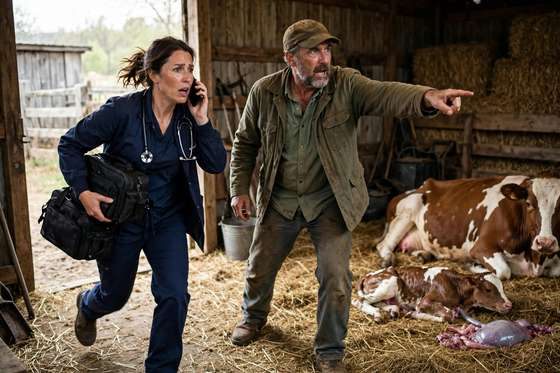
Emergency — call the veterinarian at once
1
Call the veterinarian immediately(Do not wait to see if it goes back — it will not, and every hour makes repair harder)
2
Keep the cow calm and standing if possible(A standing cow is easier to treat; keep dogs and other animals away)
3
Keep the uterus clean and moist(Cover it with a clean, damp cloth or plastic sheet; keep it off the ground)
4
Do not pull the afterbirth(Attached membranes come away with gentle cleaning — pulling tears the uterus)
5
Keep the calf safe and warm(Move the calf aside and make sure it gets colostrum while the cow is treated)
Important: All surgical procedures must be performed by a qualified veterinarian under proper anaesthesia and aseptic conditions. Never attempt surgery on your own animals without veterinary training.
Repair — Step by Step
Repair follows a fixed order: stop the straining, clean the uterus, replace it fully, retain it, and give aftercare. Rushing the replacement while the cow is still straining is the commonest cause of failure.
1
Give a caudal epidural(Epidural anaesthesia at the tailhead stops straining and relaxes the birth canal)
2
Clean the uterus gently(Wash with warm water and mild antiseptic; remove dirt, dung and afterbirth carefully)
3
Check for tears and damage(A torn uterus changes the plan — the veterinarian may need to repair or remove it)
4
Replace the uterus(Push it back starting from the part nearest the cow, working the horns fully inside out to in)
5
Confirm full replacement(Both uterine horns must be fully everted — a half-replaced horn prolapses again)
6
Retain in place(A Buhner suture around the vulva, or a prolapse truss, holds the repair)
7
Give aftercare(Antibiotics, calcium and pain relief as advised by the veterinarian; watch for 24–48 hours)
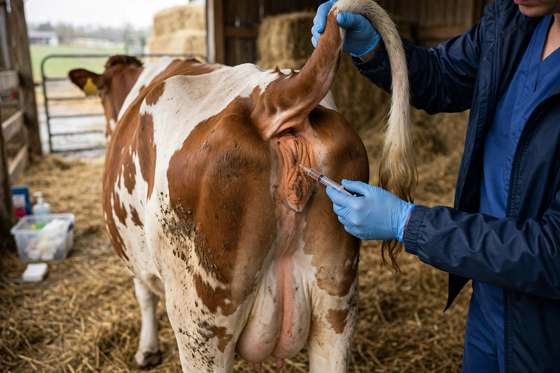
Epidural first — stop the straining
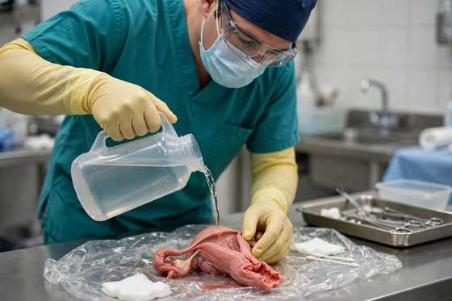
Clean gently with warm antiseptic water
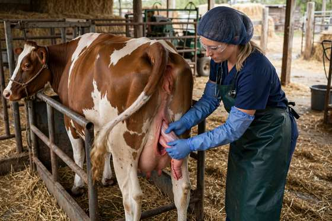
Replace fully — both horns inside
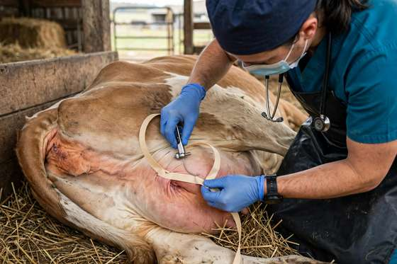
Buhner suture retains the repair
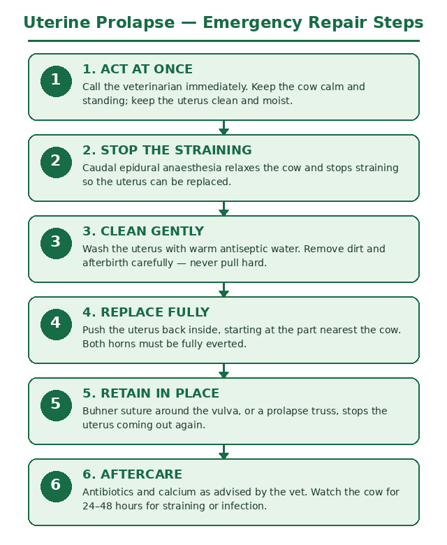
Emergency repair steps — act at once, in order
Retention Methods — Buhner Suture and Truss
After replacement, something must hold the uterus inside while the cow recovers. The two standard methods are the Buhner suture and the prolapse truss — the veterinarian chooses based on the case.
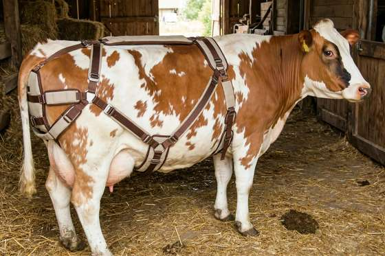
Prolapse truss — holds the repair without stitches
1
Buhner suture(A strong tape suture placed deep around the vulva with a Buhner needle; reliable, removed after a few days)
2
Prolapse truss(A harness that presses a pad over the vulva; useful where stitching is difficult or the cow is restless)
3
Vulval sutures(Simple stitches across the vulva lips for mild vaginal prolapse cases)
4
Remove retention on time(Buhner sutures must be removed before the next calving — record the date clearly)
Aftercare and Prevention
A repaired cow needs quiet rest, good feed, clean water and close watching. Most deaths after prolapse repair come from infection or from the uterus coming out again — both are preventable with good aftercare.
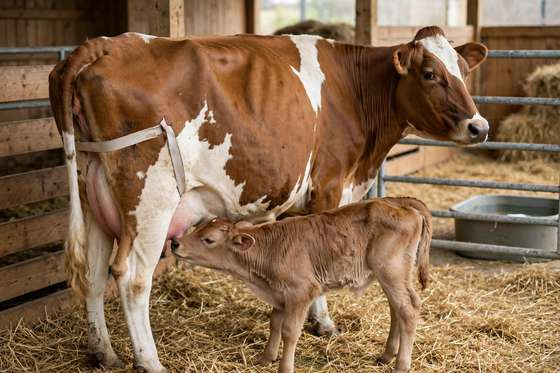
Recovery — cow and calf together again
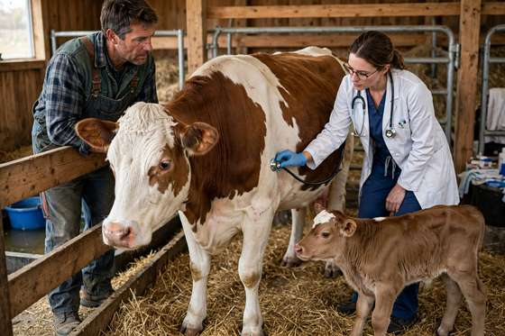
Watch closely for 24–48 hours
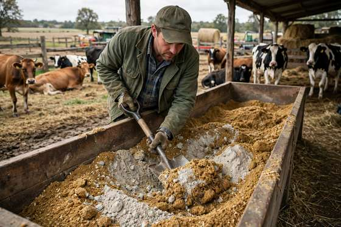
Prevention — minerals and balanced dry-cow feed
⚠ Important Tips:
Feed dry cows a balanced ration with correct calcium and minerals — low blood calcium is a major cause.
Do not overfeed energy in late pregnancy — fat cows prolapse more.
Provide a clean, quiet, well-bedded calving pen and supervise calvings.
Do not pull a calf roughly — forced traction is a common cause of uterine prolapse.
A cow that prolapsed once is more likely to prolapse again — watch her closely at the next calving.
Record every prolapse case: date, treatment, retention method and removal date.
Frequently Asked Questions
What is the difference between vaginal and uterine prolapse?
Vaginal prolapse is the vagina bulging from the vulva, usually in late pregnancy, and the cow is often otherwise well. Uterine prolapse is the whole uterus turning inside out after calving — a large red mass hanging outside the body. Uterine prolapse is a life-threatening emergency; vaginal prolapse is urgent but usually less dangerous.
What should I do first if my cow's uterus comes out after calving?
Call the veterinarian immediately. Keep the cow calm and standing if possible, keep the uterus clean and moist with a clean damp cloth, keep it off the ground, and do not pull on the afterbirth. Do not try to push it back yourself — rough handling tears the uterus.
How is uterine prolapse repaired?
The veterinarian gives a caudal epidural to stop straining, cleans the uterus with warm antiseptic water, checks it for tears, then gently pushes it back inside, making sure both horns are fully replaced. A Buhner suture or a prolapse truss then holds it in place, and antibiotics and calcium are given as advised.
What is a Buhner suture?
A Buhner suture is a strong tape placed deep around the vulva with a special Buhner needle after a prolapse has been replaced. It narrows the vulval opening so the uterus cannot come out again. It is removed after a few days, and must always be removed before the next calving.
Can a cow breed again after a uterine prolapse?
Many cows breed normally again after a well-repaired prolapse, but the risk of prolapse at the next calving is higher, and severe cases with uterine damage or infection may have reduced fertility. The veterinarian should examine the cow before the next breeding season.
Why does uterine prolapse happen after calving?
The main causes are low blood calcium (milk fever), difficult or forced calving, retained afterbirth, over-conditioning in late pregnancy, and weak uterine muscle tone. Good dry-cow feeding with correct minerals is the best prevention.
How can I prevent prolapse in my pregnant cows?
Feed a balanced dry-cow ration with correct calcium and minerals, avoid overfeeding energy in late pregnancy, provide a clean quiet calving pen, supervise calvings, and never pull a calf roughly. Watch cows that prolapsed before — they are the most likely to prolapse again.
بچہ دینے کے بعد گائے کی بچہ دانی باہر نکل آئے تو کیا کریں؟
فوراً ڈاکٹر کو بلائیں۔ گائے کو پرسکون رکھیں، بچہ دانی کو صاف گیلے کپڑے سے ڈھانپ کر زمین سے اوپر رکھیں اور جھلی کو زور سے نہ کھینچیں۔ ڈاکٹر سن کرنے والا ٹیکہ لگا کر بچہ دانی کو صاف کر کے واپس رکھے گا اور بُنر ٹانکا یا ٹرس لگائے گا۔ دیر کرنا گائے کی جان کے لیے خطرناک ہے۔
Key Takeaway
Uterine prolapse is a race against time — call the veterinarian at once, keep the cow calm and the uterus clean and moist, and never delay. A fresh prolapse replaced within hours has a good outcome; a delayed, damaged or torn uterus can cost the cow her life. After repair, retention and aftercare matter as much as the replacement itself.